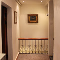
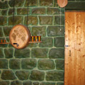
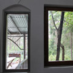
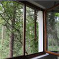
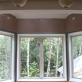
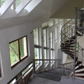
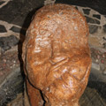
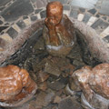
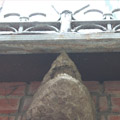

Как встраиваться в ансамбль
Download
В синергетических исследованиях показывается, что человек подстраивается под мнение большинства. Известно, что войска, которые были посланы из ставки главнокомандующего в начале Февральской Революции в Петроград, заразились революционным духом и переходили на сторону восставших.
Окна свободы и роста.
Download
Возможно ли построить дом без архитектора и даже без
архитектурного проекта? Профессионалы, конечно, ответят
вам: "Нет!" И будут по-своему правы: дом - слишком сложный
и многогранный организм, чтобы строить его "на глаз" и "от
руки". И все же встречаются смельчаки, которых это не
смущает. Всемирно известный математик, академик Виктор
Маслов - один из них. Архитектура - его хобби, которому он
отдает все свои средства и свободное время. На
подмосковном участке академика красуются уже три дома,
один другого чуднее и краше.








